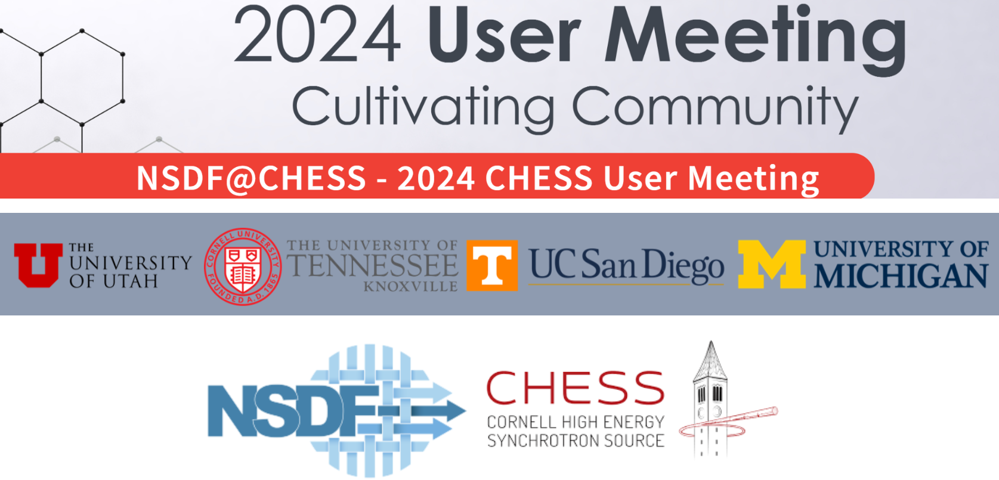
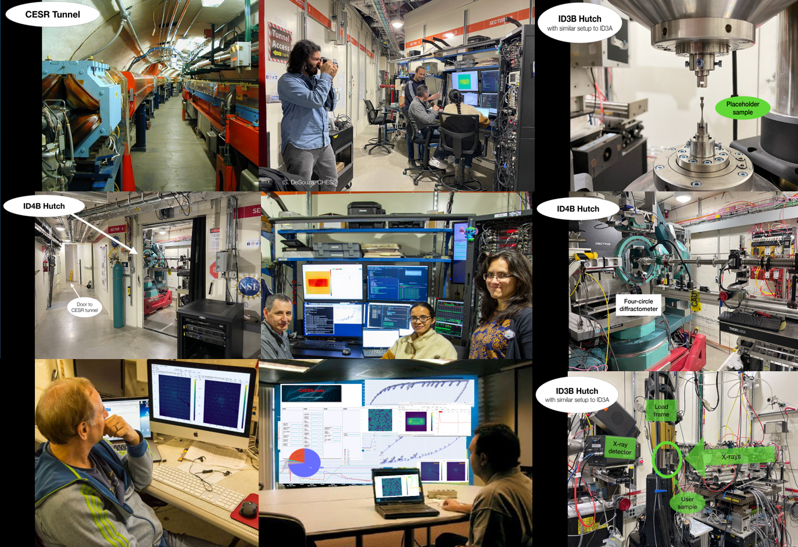
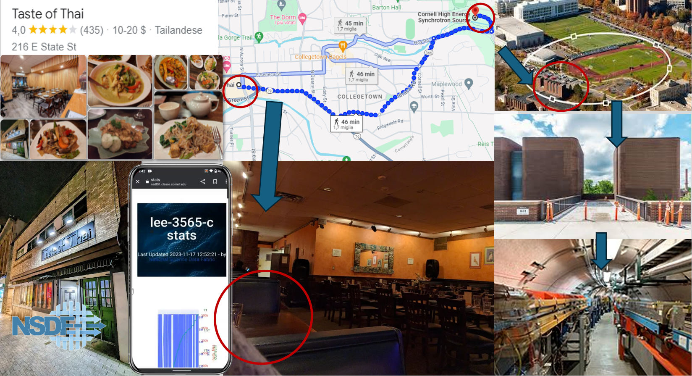
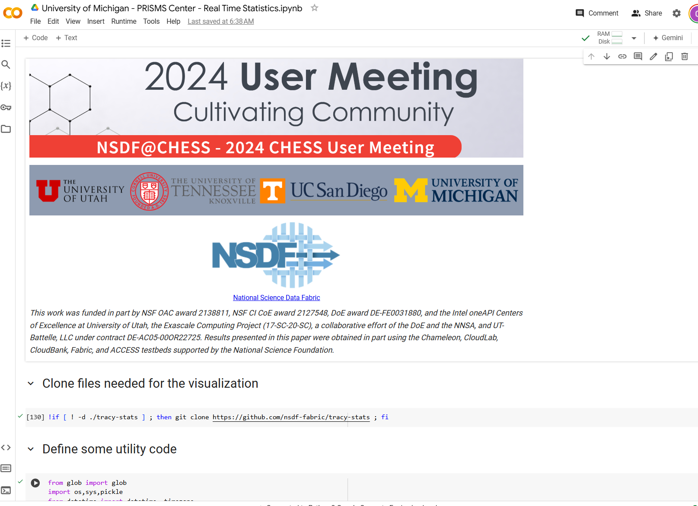

National Science Data Fabric
This work was funded in part by NSF OAC award 2138811, DoE award DE-FE0031880, and the Intel oneAPI Centers of Excellence at University of Utah, the Exascale Computing Project (17-SC-20-SC), a collaborative effort of the DoE and the NNSA, and UT-Battelle, LLC under contract DE-AC05-00OR22725. Results presented in this paper were obtained in part using the Chameleon, CloudLab, CloudBank, Fabric, and ACCESS testbeds supported by the National Science Foundation.
A special thanks to John Allison, Tracy Berman, Glenn Tarcea, PRISMS center and Materials Commons
This work was funded in part by NSF OAC award 2138811, DoE award DE-FE0031880, and the Intel oneAPI Centers of Excellence at University of Utah, the Exascale Computing Project (17-SC-20-SC), a collaborative effort of the DoE and the NNSA, and UT-Battelle, LLC under contract DE-AC05-00OR22725. Results presented in this paper were obtained in part using the Chameleon, CloudLab, CloudBank, Fabric, and ACCESS testbeds supported by the National Science Foundation.
A special thanks to John Allison, Tracy Berman, Glenn Tarcea, PRISMS center and Materials Commons


October 2023, Wilson Synchrotron Laboratory



Notebooks
Chess UM24 - Statistics.ipynb
Chess UM24 - View2D.ipynb
Chess UM24 - View3D.ipynb
Chess UM24 - Segment.ipynb
Chess UM24 - Volume Render.ipynb
NSDF Jupyter

Work in progress...
This material is based upon work supported by the National Science Foundation under Grant No. 2138811. Any opinions, findings, and conclusions or recommendations expressed in this material are those of the author(s) and do not necessarily reflect the views of the National Science Foundation. Copyright © 2024 National Science Data Fabric